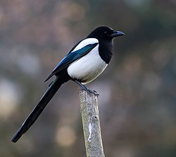

This article is about the birds in the family Corvidae. For the black and white bird often referred to by English speakers simply as 'magpie', see Eurasian magpie. For the Australasian bird in the family Artamidae, see Australian magpie. For other uses, see Magpie (disambiguation).

Magpies are birds of various species of the family Corvidae. Like other members of their family, they are widely considered to be intelligent creatures. The Eurasian magpie, for instance, is thought to rank among the world's most intelligent creatures and is one of the few nonmammalian species able to recognize itself in a mirror test. Magpies have shown the ability to make and use tools, imitate human speech, grieve, play games, and work in teams. They are particularly well known for their songs and were once popular as cagebirds. In addition to other members of the genus Pica, corvids considered magpies are in the genera Cissa, Urocissa, and Cyanopica.
Magpies of the genus Pica are generally found in temperate regions of Europe, Asia, and western North America, with populations also present in Tibet and high-elevation areas of Kashmir. Magpies of the genus Cyanopica are found in East Asia and the Iberian Peninsula. The birds called magpies in Australia are, however, not related to the magpies in the rest of the world.
See magpie on Wikipedia